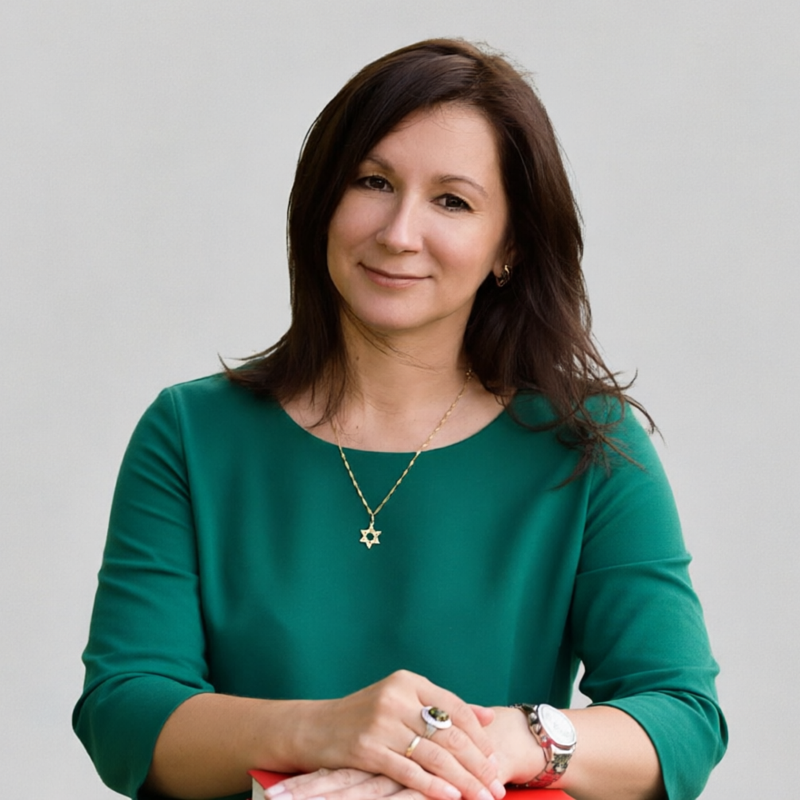
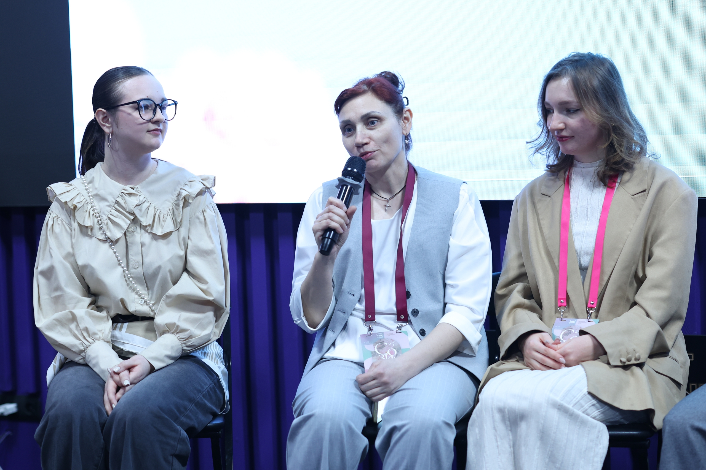

Поддерживающее сообщество женщин «Цветущий сад»: арт-терапия, исцеление через творчество и восстановление надежды. Творчество как катализатор личностного роста, социальной сплочённости и культурного развития.
Автономная некоммерческая организация Центр социально значимых проектов «Спешите делать добро» — унитарная некоммерческая организация, созданная на основе имущественного взноса гражданина РФ в целях предоставления социальных услуг.
Творчество играет фундаментальную роль в созидании общества, выступая катализатором личностного роста, социальной сплочённости и культурного развития.
Написание картин с начинающими и продолжающими художниками. Групповая арт-терапия, интуитивная живопись, цветотерапия и работа с текстурами.
Написание картин с людьми, находящимися в тяжёлых жизненных обстоятельствах. Творчество как инструмент восстановления внутренних опор.
Написание картин с подрастающим поколением — детьми, подростками, в том числе сиротами. Развитие творческого потенциала и социальных навыков.
Специалисты, которые ведут арт-терапевтические сессии и вдохновляют участниц на творчество.

Организует и координирует работу арт-проектов, создаёт атмосферу творчества и глубокого смысла на каждой встрече.

Раскрывает творческий потенциал участниц, обучает базовым техникам живописи, помогает преодолеть страх чистого листа.
Фотографии команды и номинация проекта 2025 года — на странице форума «Созидай»: createforum.ru/2025#rec871190883
В условиях современной социально-экономической повестки женщины в крупных промышленных и административных центрах, таких как Красноярск, сталкиваются с колоссальной психоэмоциональной нагрузкой. Совмещение работы, быта и воспитания детей при дефиците времени и высокой тревожности ведёт к накоплению хронического стресса, росту эмоционального выгорания и скрытой социальной изоляции.
Традиционные институты психологической помощи остаются недоступными для наиболее нуждающихся слоёв населения. Главные барьеры:
Проект «Цветущий сад» предлагает комплексное решение на стыке психопрофилактики, групповой арт-терапии и создания долгосрочной поддерживающей среды взаимовыручки. Выбор целевой группы и методологии основан на успешном четырёхлетнем практическом опыте организации.
Сбережение ментального здоровья, профилактика эмоционального выгорания и снижение уровня психоэмоционального напряжения у женщин города Красноярска через развитие открытого поддерживающего арт-сообщества и внедрение доступных практик групповой арт-терапии.
Основная идея — использование преобразующей силы искусства как мягкого, но глубокого терапевтического инструмента.
Каждую сессию совместно ведут два профильных специалиста: дипломированный арт-терапевт отвечает за психологическое содержание, групповую динамику и атмосферу принятия; художник-педагог раскрывает творческий потенциал, снимает страх чистого листа и обучает базовым техникам живописи.
Среднее количество участников на встрече — тридцать человек. Это сохраняет терапевтическую безопасность, позволяет уделить внимание каждой женщине и соответствует вместимости площадки.
Участницы пишут интерьерные картины художественными красками на холстах. Используются методы интуитивной живописи, цветотерапии и работы с текстурами. Готовая картина остаётся у женщины — как личный визуальный якорь стабильности, силы и восстановленной надежды.
Каждая встреча длится несколько часов и разделена на три логических блока.
Занятие открывается коротким интерактивным блоком о популяризации благополучного семейного образа жизни, традиционных ценностей и ответственного родительства.
Процесс написания картины, привязанный к психологическому модулю: высвобождение подавленных эмоций, преодоление страхов, выстраивание личных границ, актуализация внутренних ресурсов и планирование позитивного будущего.
Проект дружественен к семье. Для устранения главного барьера в пространстве встреч организуется безопасный детский уголок с параллельной лёгкой творческой занятостью детей.
Участие в ключевых событиях, посвящённых созидательной роли женщины в семье и обществе.
Мы — на площадке Общественной палаты РФ. Главное событие дня — пленарная сессия «Созидательная роль женщины в семье и обществе: единство духовно-нравственных ценностей и социальной ответственности».
Цель форума: объединение женщин на основе общих традиционных духовно-нравственных ценностей для созидания сообщества, взаимной поддержки, личностного восстановления и формирования гармоничной социальной среды, способствующей укреплению семьи, защите материнства и детства, позитивному влиянию на культуру и будущие поколения.
Участие в качестве спикеров в направлении «Культура и искусство» на женском форуме «Созидай», который объединяет людей для общения и взаимодействия, где можно поделиться опытом работы в различных сферах и приобрести новый опыт, расширить свои знания для помощи людям, попавшим в трудную жизненную ситуацию.
Получили благодарность и вошли в 30 проектов России как «Лучшие практики регионов». Тема форума — «Созидательная роль женщины в семье и обществе».
Мероприятие объединило женщин разных возрастов, национальностей, интересов, статусов и конфессий, разделяющих единые семейные, духовные, христианские традиционно-нравственные ценности.
Терапевтический эффект очных встреч не прерывается после завершения занятий. В рамках проекта развивается внутренняя экосистема взаимопомощи через закрытый онлайн-чат поддержки. Участницы делятся личным опытом, а арт-терапевт регулярно публикует поддерживающие материалы и психологические практики самопомощи.
Измеримое снижение уровня психоэмоционального напряжения, тревожности и синдрома выгорания. Женщины обретут применимые в быту навыки саморегуляции и алгоритмы преодоления кризисных ситуаций.
Снижение уровня тревожности и восстановление психологического ресурса у женщины напрямую улучшает психоэмоциональный климат в семье: меньше агрессии и депрессивных состояний, ниже конфликтность в доме.
В Красноярске закрепится и укрепится жизнеспособное открытое женское сообщество взаимовыручки, обеспечивающее профилактику социальной изоляции граждан.
Ссылки на публикации сообщества ВКонтакте. Нажмите на любую карточку — материал откроется в новой вкладке.
Ничего не найдено. Измените запрос или фильтр.
Наша организация действует строго в правовом поле. Ознакомиться с Уставом и отчётами можно на портале Минюста. Устав утверждён решением единственного учредителя от 18 апреля 2025 г.